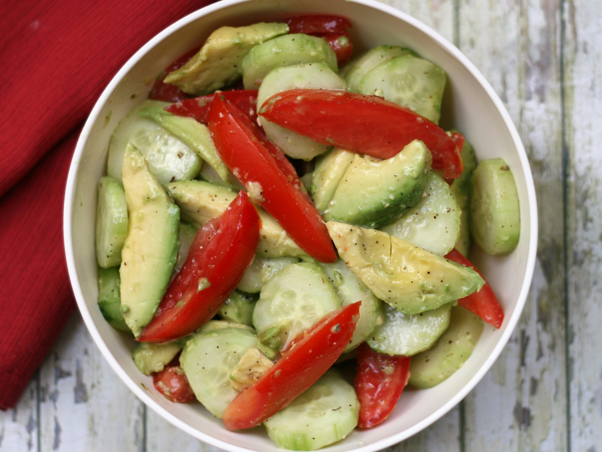

Avocado Tomato Salad with Cucumbers

Mediterranean salad mix
Fresh, tasty, as all of the recipes featured on this site
If you ever fantasized about vacation spent in southern Europe, the taste of this salad will bring you one step closer to the real thing
Ingredients
- 5 medium avocados, halved, peeled and pitted
- 2 large cucumbers, ends trimmed
- 4 medium Roma tomatoes
- 1/4 cup rice wine vinegar
- 1/4 cup Italian salad dressing
- 1/4 teaspoon dried oregano leaves
- 3/4 teaspoon freshly ground black pepper
- 1/2 teaspoon sea salt
Steps
- Cut avocados into wedges
- Peel cucumbers, if desired, and cut into slices
- Core tomatoes and cut into wedges
- Transfer all to a bowl
- Add vinegar, Italian dressing, oregano, pepper, salt
- Mix until well combined and voila!